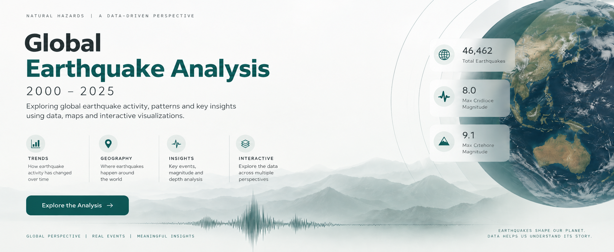
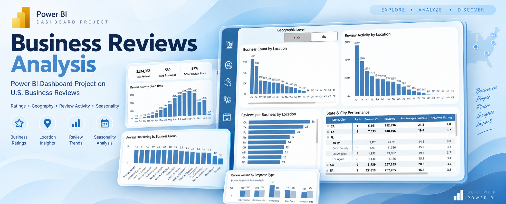
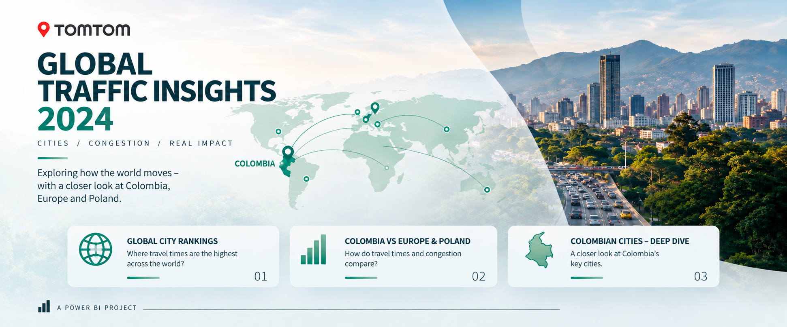
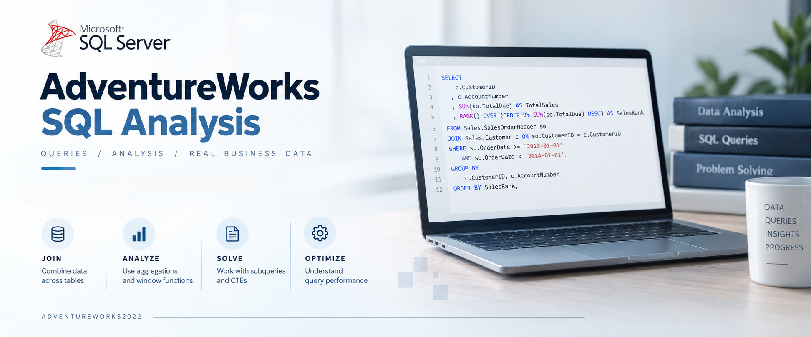

Global Earthquake Analysis | 2000–2025
Analiza 46 462 trzęsień ziemi z lat 2000–2025, łącząca SQL Server, QGIS i Power BI w analizie czasowej, geograficznej oraz analizie magnitudy i głębokości.
Data Analyst
Skupiam się na analizie danych, raportowaniu i wizualizacji. W swoich projektach wykorzystuję Power BI, SQL i Excel do tworzenia czytelnych i praktycznych rozwiązań analitycznych.
Projekty z zakresu analizy danych, raportowania i wizualizacji.

Analiza 46 462 trzęsień ziemi z lat 2000–2025, łącząca SQL Server, QGIS i Power BI w analizie czasowej, geograficznej oraz analizie magnitudy i głębokości.
Interaktywny raport sprzedaży i zapasów fikcyjnej księgarni, obejmujący analizę rynków, produktów, popytu, sezonowości, rentowności i wzrostu klientów.

Analiza ponad 2,3 mln opinii dotyczących około 150 tys. firm, obejmująca oceny, aktywność użytkowników, geografię i sezonowość.

Analiza danych TomTom Traffic Index 2024 dla 501 miast, ze szczególnym uwzględnieniem Kolumbii oraz porównań z Europą i Polską.

Repozytorium praktycznych analiz SQL na bazie AdventureWorks2022, obejmujące joiny, agregacje, funkcje okienkowe, podzapytania, CTE oraz optymalizację zapytań.